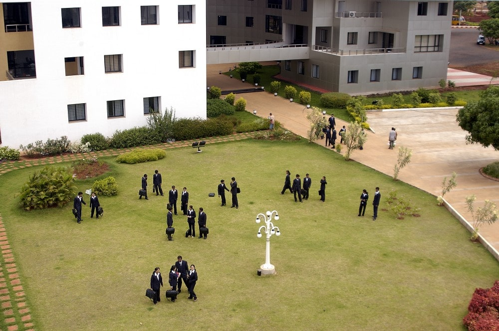
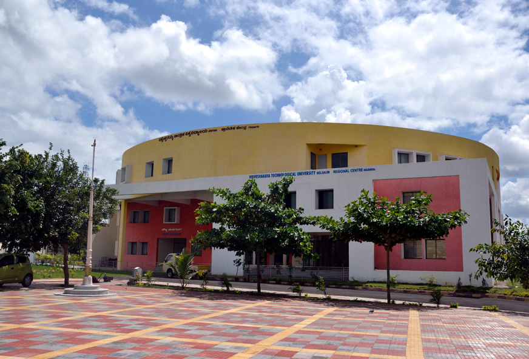

|  |
VISION
To become an outstanding Technological University at the
cutting edge of Science and Technology
that produces world class Knowledge-delivery,Research, Extension and Leadership in Technology
innovation for Industry and Society.
|
MISSION
To plan the development of technical education, to establish
value-based and need-based education and training in engineering and technology,
with a view to generate qualified and competent manpower, responsive to technological and
societal needs.
|

|
|

|
MANDATE
The Visvesvaraya Technological University has been established
by the Government of the Karnataka in order to Promote planned and sustainable development of
technical education consistent with state and national policies.
- Design need based programs that ensure adequate human resource of the right kind.
- Establish objective evaluation and certification systems for students,programs and
institutions.
- Collaborate with national and international institutions R&D establishments
organizations like AICTE, MHRD, UGC, etc.industry and user agencies.
|